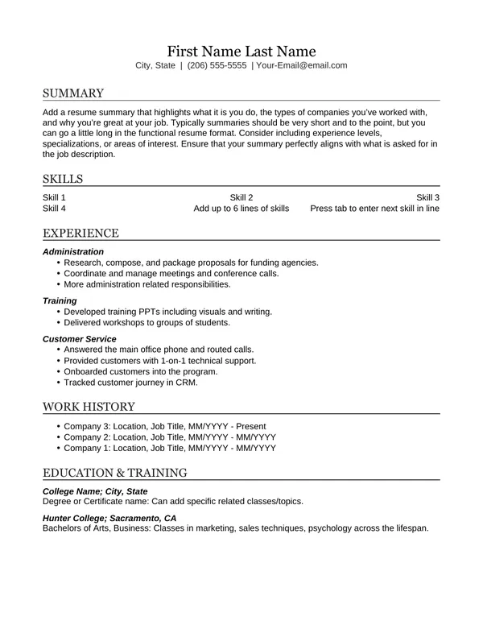
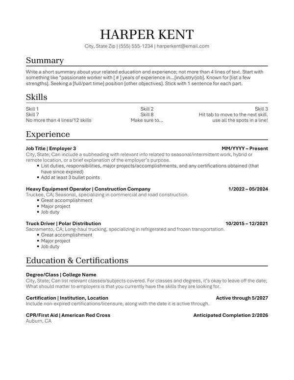
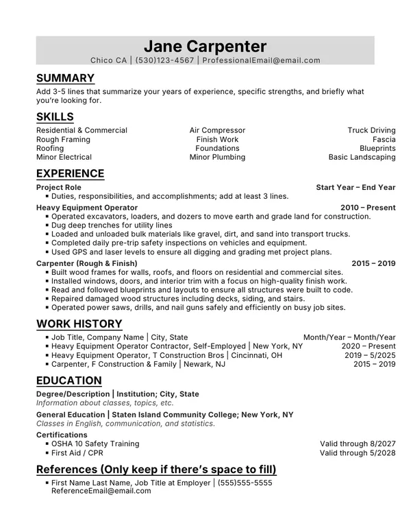
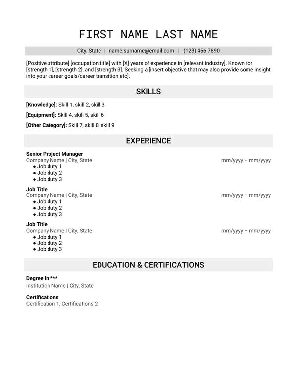

Choosing a Resume Type
Learn the difference between resume types and which one you should use.
Our resume templates are designed to give you the best chance at getting an interview. If a job gets 500 applications, the person hiring might only fully read a few dozen resumes.
Almost all resume creators aren't free, even if they say they are. Once you try to download or share your resume, they ask you to pay for a subscription. The only free resume creators we've found are Resume.com and Indeed.
Learn the difference between resume types and which one you should use.
Tips for using AI, plus prompts you can copy and paste into an AI chat.
What to do (and not do) with formatting, fonts, and content.
Not sure which one to pick? Read Choosing a Resume Type.
We recommend Google Docs for resumes and cover letters because:
Don't have a Google account? You can make one for free with the email you already have. You don't need Gmail. How to make a Google account with your current email
Choose how you want to work:
You'll make your own copy in your Google account. You can edit it, and it saves automatically.
On a computer:
On iPhone and Android:
You'll download the file and edit it in Word. Word is best on a computer. On a phone, we recommend Google Docs.
To keep your resume, email the file to yourself, save it to a flash drive, or upload it to your Indeed profile or CalJOBS account.
On a computer:
On a phone:

Good for:
Mostly project-based work? Use the Hybrid Project Based template.

Good for:

Good for:

Good for:
Our templates follow these rules for a reason. To be successful, a resume must pass these tests, in order.
Most employers use software to sort resumes before a person ever sees them.
An Applicant Tracking System (ATS) is like a digital filing cabinet. Employers use it to manage hiring. It works like a search engine for the employer's hiring department.
If the ATS can read your resume, it also needs enough of the right keywords to rank high and get passed on to the recruiter.
Recruiters don't read every resume that reaches them. They glance at it first. Within about 8 seconds, they decide whether to keep reading or move on. Recruiters lean toward resumes that are easy to scan quickly.
Recruiters decide based on:
Some information can be left out of a resume, and it's often better to leave it out. A recruiter may judge you on things that have nothing to do with the job, like your age, ethnicity, or employment gaps.
Include what the job posting asks for. The quality of your formatting and writing matters too. If the employer wants someone detail-oriented with good writing skills, your resume needs to show that, with no typos or grammar mistakes.
Want all the rules in one place?
Stuck? Stop by the Grass Valley resource room or call (530) 328-1953.